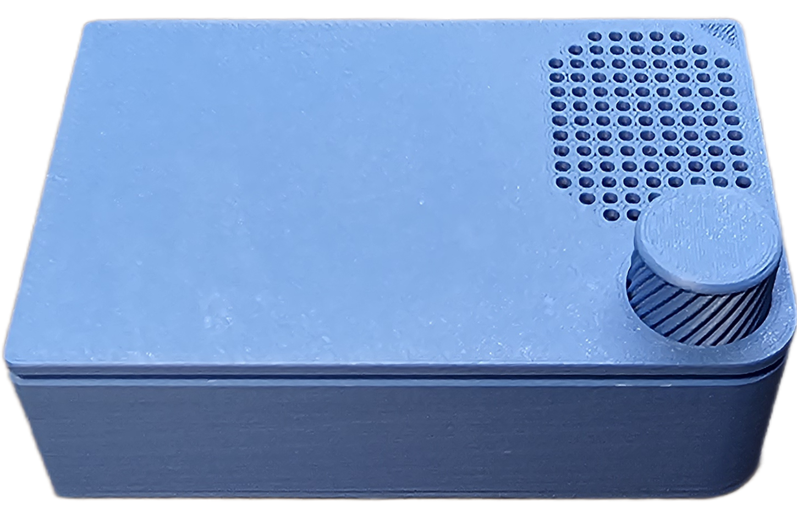
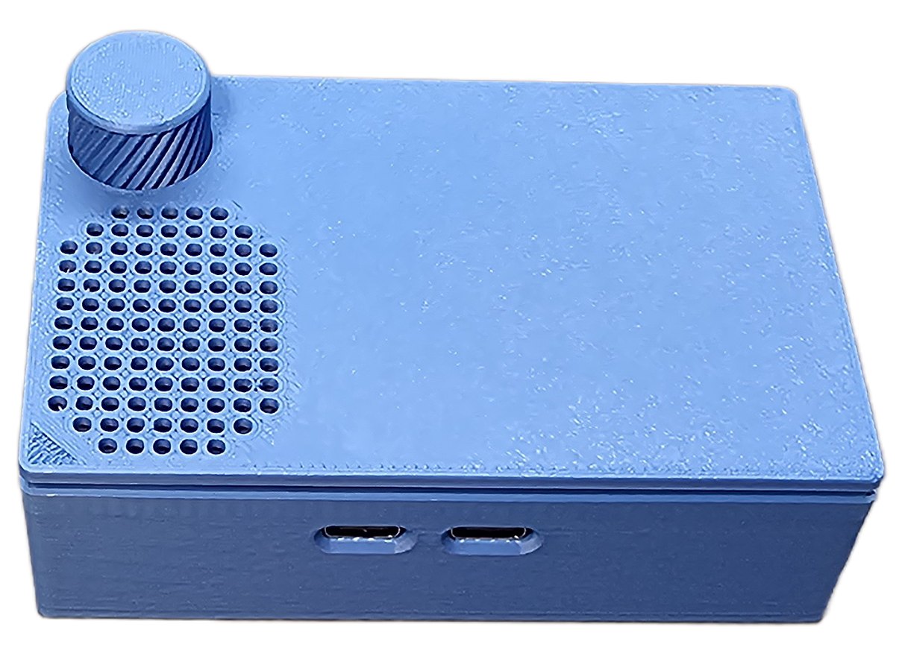
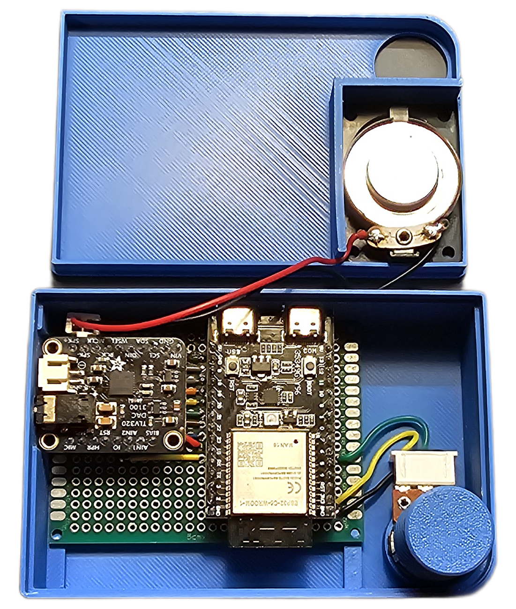

DECtalk ESPress Physical Device
This document describes the perfboard build shown in the repository images. It uses an ESP32-C6 development board, an Adafruit TLV320DAC3100 audio breakout, a small speaker, and a front-panel volume potentiometer to make a self-contained DECtalk ESPress device.
Parts
| Part | Notes |
|---|---|
| Generic ESP32-C6 development board | Provides USB Serial/JTAG for host communication and firmware flashing. |
| Adafruit TLV320DAC3100 audio breakout | I2S DAC, I2C-controlled codec, and class-D speaker amplifier. |
| 3 W 8 Ω mini speaker | Connects directly to the TLV320 speaker outputs. |
| 10 kΩ linear potentiometer | Optional analog volume control. |
| Perfboard | Carries the ESP32-C6 board, audio breakout, and wiring. |
Build photos and layout
Click any image to open the full-size version.
|
 Front |
 Back |

Left side |

Right side |
|
 Inside |

Perfboard wiring layout |
{kind=link}
{kind=link}
{kind=link}
Firmware configuration
Configure the firmware for the ESP32-C6 target and the TLV320DAC3100 breakout:
- Run
idf.py set-target esp32c6. - In
idf.py menuconfig, select DECtalk ESPress Firmware → Audio output → Audio DAC → Adafruit TLV320DAC3100 breakout. - Use the pin assignments in the wiring table below.
- If using the potentiometer, enable DECtalk ESPress Firmware → Audio output → Analog volume knob (potentiometer) → Enable analog volume potentiometer.
Wiring
The layout is illustrated in images/pcb layout.png. The following table lists the same hookups in text form.
ESP32-C6 to TLV320DAC3100
| ESP32-C6 pin | TLV320DAC3100 pin | Function | Menuconfig setting |
|---|---|---|---|
| 5V | VIN | Breakout power | n/a |
| GND | GND | Ground | n/a |
| GPIO 23 | MCLK | I2S master clock | DTESP_I2S_MCLK_GPIO=23 |
| GPIO 21 | BCLK | I2S bit clock | DTESP_I2S_BCK_GPIO=21 |
| GPIO 20 | WCLK | I2S word select / LRCK | DTESP_I2S_WS_GPIO=20 |
| GPIO 19 | DIN | I2S audio data to codec | DTESP_I2S_DO_GPIO=19 |
| GPIO 18 | SDA | I2C data | DTESP_I2C_SDA_GPIO=18 |
| GPIO 9 | SCL | I2C clock | DTESP_I2C_SCL_GPIO=9 |
| GPIO 22 | RST | Codec reset | DTESP_CODEC_RESET_GPIO=22 |
| GPIO 15 | GPIO / interrupt | Codec interrupt | DTESP_CODEC_INT_GPIO=15 |
Speaker
| Speaker lead | TLV320DAC3100 pin |
|---|---|
| Speaker + | SPK+ |
| Speaker - | SPK- |
The TLV320DAC3100 speaker output is a bridge-tied-load amplifier. Do not connect either speaker terminal to ground.
Volume potentiometer
| Potentiometer terminal | ESP32-C6 pin | Function |
|---|---|---|
| One outside lug | 3V3 | ADC high reference |
| Wiper / center lug | GPIO 6 | Volume ADC input (DTESP_VOLUME_KNOB_GPIO=6) |
| Other outside lug | GND | ADC low reference |
If the knob works backwards, swap the two outside potentiometer lugs.
Assembly notes
- Keep the I2S and I2C wires short and route all grounds back to the ESP32-C6 ground rail.
- Use the TLV320DAC3100
SPK+andSPK-pins only for the speaker. Use the headphone pins only for headphone output. - The ESP32-C6 USB connector remains accessible for flashing, logs, and normal DECtalk ESPress host communication.
- Power the device down before changing wiring or moving boards on the perfboard.